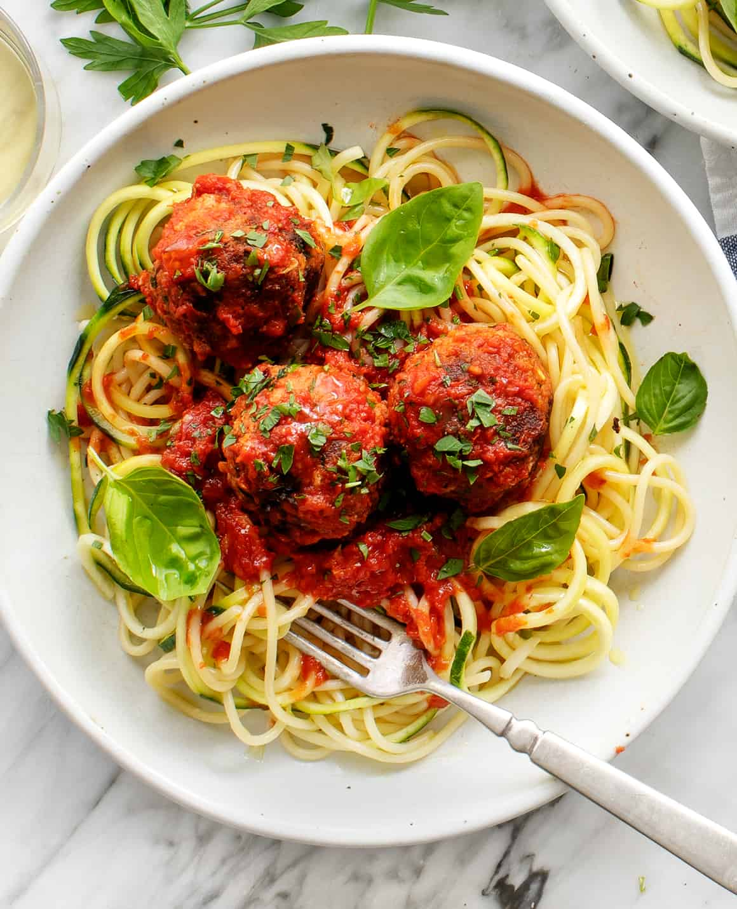

Spaghetti Meatballs

Description
Spaghetti and meatballs is a classic Italian-American dish featuring tender meatballs simmered in a rich tomato sauce, served over al dente spaghetti. The savory flavors of the meat and sauce blend perfectly with the pasta, creating a hearty and comforting meal.
Ingredients
- Spaghetti
- Chopped tomatoes
- Seasonings
- Pork mince
- Onion
Steps
- Mix ground meat with breadcrumbs, egg, and seasoning, then shape into balls.
- Sauté garlic, add tomato sauce, and simmer the meatballs in the sauce.
- Cook spaghetti, toss with the sauce, and top with meatballs.